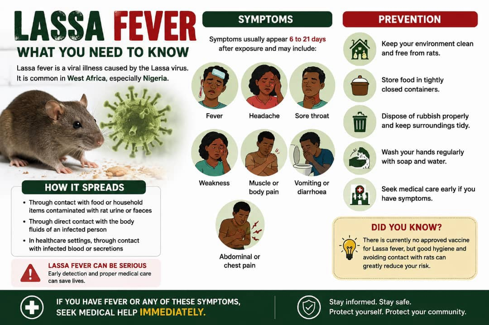

Website Builder Software
Lassa fever remains a serious public health concern in Nigeria, with more than 1,000 confirmed cases reported in 2026 so far.
According to the Nigeria Centre for Disease Control and Prevention(NCDC), by epidemiological week 31 of 2026, Nigeria had recorded 1,017 confirmed Lassa fever cases and 239 deaths among confirmed cases. Cases had been reported across 23 states and 117 local Government areas.
But what exactly is lassa fever, and how can you recognize it?
What is Lassa Fever?
Lassa fever is an acute viral illness caused by the lassa virus. It is endemic in parts of west afric, including Nigeria.
The virus is primarily associated with exposure to infected multimammate rats, which can contaminate food or household surfaces with their urine or other body fluids.
Lassa fever can also spread between people, particularly in healthcare settings, through contact with infected blood or other bodily fluids.
7 Symptoms to watch for
Symptoms can vary considerably, and some infected people may have mild illness. When symptoms occur, they can include:
- Fever
- Weakness or unusual tiredness
- Headache
- Sore throat
- Muscle or body pain
- Vomiting or diarrhea
- Abdominal or chest pain
More serious illness can affect multiple organs and may require hospital treatment.
Why early medical attention matters
Lassa fever can initially resemble several other infections that cause fever. This can make early recognition difficult.
If someone develops a persistent fever or become seriously unwell, particularly in an area where lassa fever is being reported, they should seek medical care promptly rather than trying to diagnose themselves.
Healthcare professionals can determine whether testing or further investigation is necessary.
How can lassa fever be prevented?
practical measures include:
- store food in tightly sealed containers.
- keep kitchens and food-preparation area clean.
- dispose of rubbish properly.
- reduce opportunities for rodents to enter homes.
- avoid contact with potentially contaminated materials.
- healthcare workers should follow appropriate infection-prevention procedures.
The bigger picture
Lassa fever is not a new disease in Nigeria, but the number of reported cases and deaths makes continued surveillance and public awareness important.
The NCDC continues to publish situation reports tracking the outbreak across the country.
If you have symptoms of serious infection, seek medical attention. this article is for public health education and does not replace medical evaluation.
sources: Nigeria Centre for Disease Control and Prevention (NCDC).
Website Builder Software